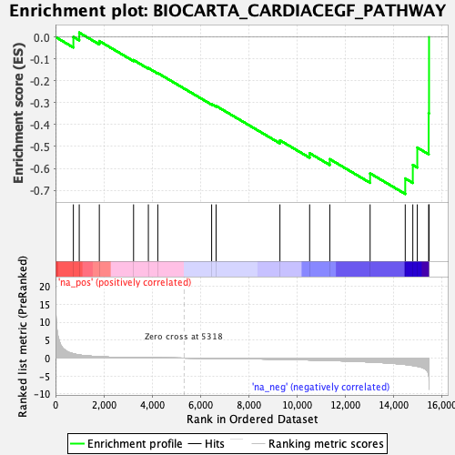
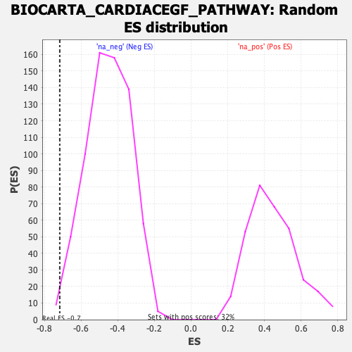

| | | Dataset | DE_genes |
| Phenotype | NoPhenotypeAvailable |
| Upregulated in class | na_neg |
| GeneSet | BIOCARTA_CARDIACEGF_PATHWAY |
| Enrichment Score (ES) | -0.71686095 |
| Normalized Enrichment Score (NES) | -1.5844095 |
| Nominal p-value | 0.010294118 |
| FDR q-value | 0.106234945 |
| FWER p-Value | 0.579 |
Table: GSEA Results Summary

Fig 1: Enrichment plot: BIOCARTA_CARDIACEGF_PATHWAY
Profile of the Running ES Score & Positions of GeneSet Members on the Rank Ordered List
| PROBE | GENE SYMBOL | GENE_TITLE | RANK IN GENE LIST | RANK METRIC SCORE | RUNNING ES | CORE ENRICHMENT | | 1 | ADAM12 | | | 740 | 1.214 | 0.0005 | No |
| 2 | RHOA | | | 983 | 0.880 | 0.0198 | No |
| 3 | NFKB1 | | | 1815 | 0.385 | -0.0186 | No |
| 4 | EGFR | | | 3233 | 0.120 | -0.1055 | No |
| 5 | EDN1 | | | 3846 | 0.079 | -0.1420 | No |
| 6 | EGF | | | 4236 | 0.056 | -0.1649 | No |
| 7 | RELA | | | 6467 | -0.071 | -0.3063 | No |
| 8 | PRKCB | | | 6650 | -0.085 | -0.3148 | No |
| 9 | HRAS | | | 9295 | -0.347 | -0.4720 | No |
| 10 | EDNRB | | | 10526 | -0.525 | -0.5307 | No |
| 11 | PRKCA | | | 11361 | -0.669 | -0.5580 | No |
| 12 | AGT | | | 13030 | -1.084 | -0.6228 | No |
| 13 | EDNRA | | | 14485 | -1.776 | -0.6461 | Yes |
| 14 | PLCG1 | | | 14799 | -2.062 | -0.5843 | Yes |
| 15 | MYC | | | 14984 | -2.284 | -0.5052 | Yes |
| 16 | JUN | | | 15456 | -4.705 | -0.3483 | Yes |
| 17 | FOS | | | 15471 | -8.771 | -0.0000 | Yes |
Table: GSEA details [plain text format]

Fig 2: BIOCARTA_CARDIACEGF_PATHWAY: Random ES distribution
Gene set null distribution of ES for BIOCARTA_CARDIACEGF_PATHWAY